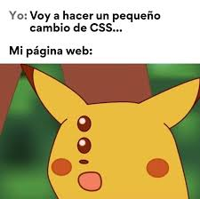
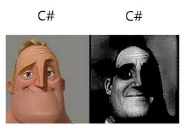

CSS

C#

En el vasto universo de las razones por las cuales Dunamer me pela el banano, los científicos aún no se ponen de acuerdo, pero hay teorías bastante sólidas que merecen ser estudiadas en la Universidad de la Vida. Algunos dicen que todo comenzó el día en que decidió que salir de casa era un “bug opcional” y no una función básica del sistema humano, lo cual explicaría por qué ha pasado más tiempo en modo desarrollo frente a la pantalla que en modo vida real. Otros afirman que su sangre ya no fluye, sino que corre código JavaScript, porque cada vez que parpadea se compila una nueva función de programación avanzada. Se rumorea también que ha adoptado costumbres ancestrales de los otakus legendarios, pasando tantas horas encerrado que ya ha desarrollado habilidades de camuflaje con la silla de su escritorio, convirtiéndose prácticamente en parte del mobiliario. Su cabello, por otro lado, ha entrado en una dimensión paralela donde las tijeras no existen, y ya se dice en el barrio que si sigue creciendo así podría servirle de cable de red alternativo. Mientras tanto, su dieta ha sido objeto de estudio humanitario, pues hay reportes no confirmados de que ha sobrevivido tantos días seguidos a base de aire, memes y café, lo cual lo convierte en una especie de venezolano de alto rendimiento energético. También se sospecha que sufre de una condición conocida como “programatitis crónica”, que le impide abandonar el teclado incluso cuando el mundo exterior le grita que hay sol, vida y contacto humano. Los expertos recomiendan que, por su propio bien, salga a la calle, vea la luz del día, se corte el pelo antes de que alcance niveles de boss final de videojuego, y recuerde que el cuerpo humano no se actualiza solo con commits en GitHub. Aun así, él sigue firme en su misión desconocida, programando como si estuviera construyendo el próximo universo digital mientras ignora que el mundo real sigue ejecutándose en paralelo.
CSS

C#
